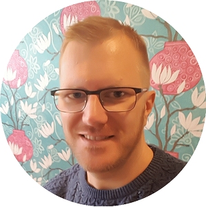

|  |
Rickard HultgrenMjukvaruutvecklare vid AlmaSoft. Jag jobbar som mjukvaruutvecklare på AlmaSoft i Veberöd. Mina arbetsuppgifter består av underhåll och utveckling av system som används inom privattandvården. Min akademiska bakgrund består främst av systemvetarprogrammet vid Lunds Universitet. |